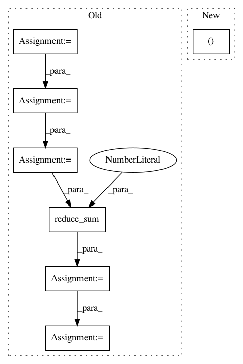

a437991e12a334b40b082fdc8b1b6dcf4a68021f,deepchem/models/tensorgraph/layers.py,NeighborList,get_cells_for_atoms,#NeighborList#Any#Any#,965
Before Change
// Tile both cells and coords to form arrays of size (n_cells*N, ndim)
tiled_cells = tf.tile(cells, (N, 1))
// N tensors of shape (n_cells, 1)
tiled_cells = tf.split(tiled_cells, N)
// Shape (N*n_cells, 1) after tile
tiled_coords = tf.reshape(
tf.tile(coords, (1, n_cells)), (n_cells * N, ndim))
// List of N tensors of shape (n_cells, 1)
tiled_coords = tf.split(tiled_coords, N)
// Lists of length N
coords_rel = [
tf.to_float(coords) - tf.to_float(cells)
for (coords, cells) in zip(tiled_coords, tiled_cells)
]
coords_norm = [tf.reduce_sum(rel**2, axis=1) for rel in coords_rel]
// Lists of length n_cells
// Get indices of k atoms closest to each cell point
closest_inds = [tf.nn.top_k(-norm, k=1)[1] for norm in coords_norm]
// TODO(rbharath): tf.stack for tf 1.0
return tf.stack(closest_inds)
After Change
tiled_coords = tf.reshape(
tf.tile(coords, (1, n_cells)), (n_cells * N_atoms, ndim))
coords_vec = tf.reduce_sum((tiled_coords-tiled_cells)**2, axis=1)
coords_norm = tf.reshape(coords_vec, (N_atoms, n_cells))
closest_inds = tf.nn.top_k(-coords_norm,k=1)[1]
return closest_inds
In pattern: SUPERPATTERN
Frequency: 4
Non-data size: 7
Instances
Project Name: deepchem/deepchem
Commit Name: a437991e12a334b40b082fdc8b1b6dcf4a68021f
Time: 2017-04-17
Author: bharath.ramsundar@gmail.com
File Name: deepchem/models/tensorgraph/layers.py
Class Name: NeighborList
Method Name: get_cells_for_atoms
Project Name: deepchem/deepchem
Commit Name: a437991e12a334b40b082fdc8b1b6dcf4a68021f
Time: 2017-04-17
Author: bharath.ramsundar@gmail.com
File Name: deepchem/models/tensorgraph/layers.py
Class Name: NeighborList
Method Name: get_neighbor_cells
Project Name: IndicoDataSolutions/finetune
Commit Name: b374ed078f48895d9079b884b79fc36756ecc584
Time: 2019-08-02
Author: matthew.bayer@indico.io
File Name: finetune/base_models/gpt/featurizer.py
Class Name:
Method Name: gpt_featurizer
Project Name: tensorflow/ranking
Commit Name: d3f1a5ad4507e88b016e0a829f4ba142294c16e6
Time: 2019-11-12
Author: xuanhui@google.com
File Name: tensorflow_ranking/python/losses.py
Class Name: _SoftmaxLoss
Method Name: _precompute